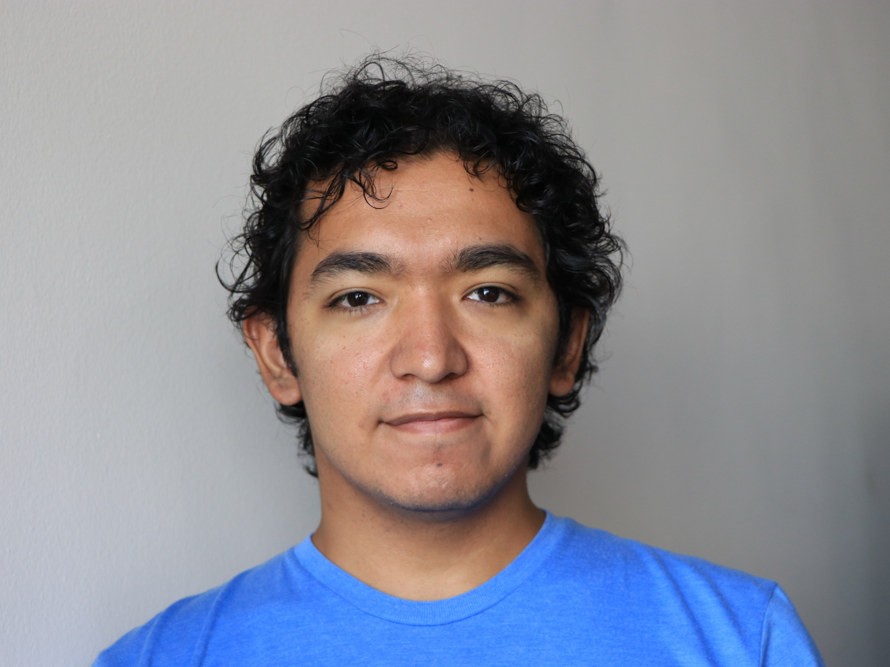

Isai Torres Garcia: Web and User Interface Design Specialist. Isai's key role in the project will be to design the front end of the website for an enhanced user experience. Isai is in charge of all GUI functionality and will work alongside Brandon during back end development.